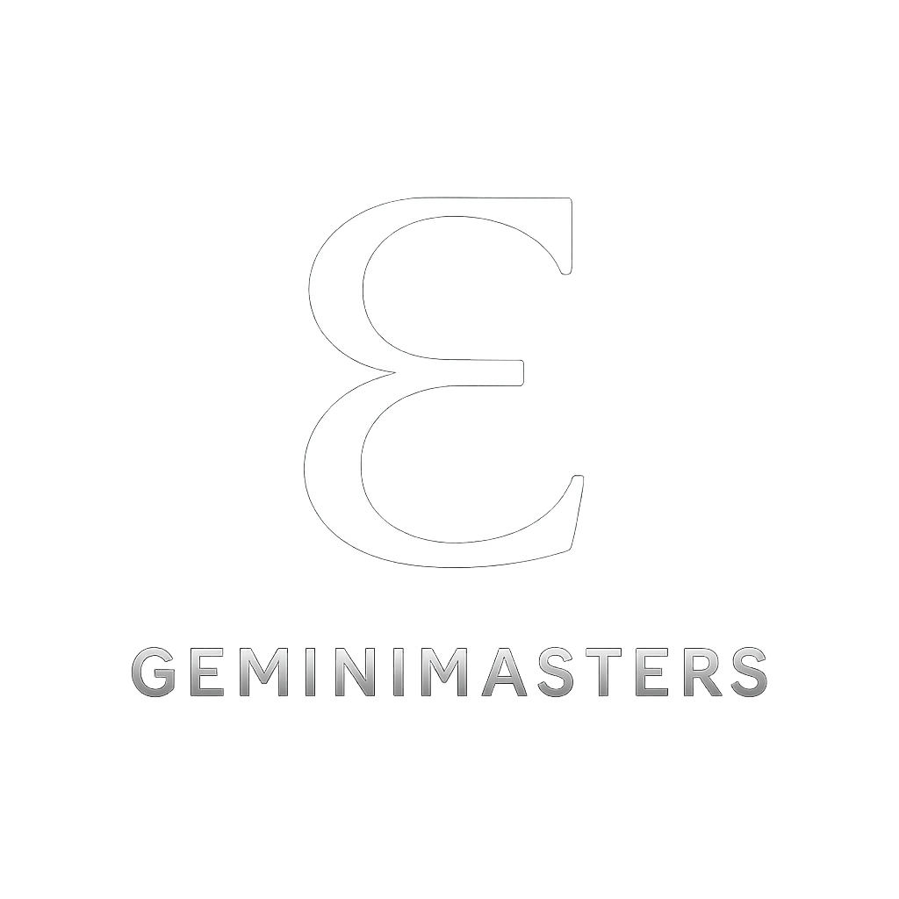

A unified reading in The Master's Voice – Western Astrology, Human Design, Vedic Astrology, BaZi, and Numerology aligned into one, coherent and personalised map. Not a forecast. A rediscovery of the cosmic design that has always been yours.
Western astrology describes your lived personality and life themes — how your psyche expresses itself through archetype, relationship, and choice.
Your deeper purpose centers on embodying practical wisdom infused with authentic emotional presence. The Virgo Sun and Leo stellium call you to be a healer and a leader who inspires through clear, heartfelt communication. The nodal path encourages you to step into roles where your grounded insight supports community or intellectual growth without losing sight of your own needs. Ultimately, you are here to balance service with self-expression, demonstrating that true mastery includes both humility and courage.
Tensions arise from the fixed modality clashing with mutable Virgo’s natural adaptability. You may feel stuck between wanting to control details and the pressure to embrace change or new ideas, especially within communication and local community environments, as suggested by the third house emphasis. The Leo stellium can amplify a desire for recognition that sometimes conflicts with your more private Cancer rising, producing internal friction between vulnerability and the urge to shine. This tension may manifest as fatigue from overcommitting to others or difficulty setting boundaries around your emotional energy.
Your evolutionary edge lies in balancing the deep need to care for others with the requirement to conserve your own energy and maintain personal boundaries. The nodal axis invites you to move from collective detachment toward grounded, heartfelt service, embracing responsibility without losing your sense of individuality. Saturn’s lessons ask for maturity in expressing your unique voice, especially in social or group settings, encouraging you to find steady leadership rather than reactive perfectionism. Growth emerges as you learn to channel your fixed intensity into consistent, sustainable creative or communicative work without self-imposed pressure to control every outcome.
Your mind is naturally analytical yet creative, able to see details others miss while maintaining a broad perspective. The Leo stellium gifts you with charisma and generosity, inviting others into your warmth when you allow it. The Earth dominance stabilizes your energy, making you reliable and consistent in your commitments. When aligned, you offer a blend of intellect, emotional depth, and steady leadership that draws people to you for guidance and support.
Recurring themes surface around emotional security and self-worth, often tied to family dynamics or early caregiving roles. The Cancer ascendant and Virgo Sun suggest inherited patterns of caretaking that can lead to self-neglect or over-analysis. Pluto’s influence and the strong Leo stellium hint at past cycles involving authority, personal power, and the need for recognition, which may replay through relationships and career. These patterns challenge you to confront fears of vulnerability and to release any compulsions to prove your value through external achievement or approval.
You are not defined by the control you attempt to exert over your environment or emotions. True strength arises when you allow yourself to be imperfect and open, trusting that your worth is inherent rather than earned. The push-pull between your Moon’s need for freedom and your rising’s craving for closeness is not a flaw but a dynamic balance that teaches resilience and adaptability. Recognizing this helps you soften judgment about your inner contradictions and embrace them as part of your unique rhythm.
Human Design maps your energetic mechanics — how your system is built to make decisions, use energy, and move through life with less resistance.
You embody the power of transformation through persistence and emotional wisdom. Your purpose is to show how to move through life with both speed and patience, balancing sacral energy with emotional clarity. By doing so, you help others see the value of waiting for the right moment to act and the strength found in resilience after setbacks. Your presence invites renewal, encouraging those around you to embrace change as a path to authenticity. Through your example of investigation, response, and emotional integrity, you contribute a grounded model of how to live dynamically yet thoughtfully.
You often face tension between your quick-moving Manifesting Generator energy and the emotional clarity you need before committing. Impatience can lead you to bypass your Emotional Authority, resulting in frustration and decisions that don’t stick. Your defined centers give you a strong core, but you may still wrestle with external expectations to act immediately or initiate, which conflicts with your true strategy to wait and respond. The 1/3 Profile adds pressure—your deep need to understand combined with your trial and error learning style may make you doubt yourself or feel stuck when things don’t work out as planned. Frustration arises when your natural rhythm is interrupted, especially if you ignore your emotions or push ahead without clarity. You might also experience pressure to settle on identity or direction prematurely, despite your stable G Center. The interplay between emotional waves and the fast sacral response can feel like a push-pull dynamic in your daily decisions and relationships, requiring constant recalibration of your timing and trust.
Your growth lies in mastering patience with your Emotional Authority and honoring the time it takes to reach emotional clarity. This means resisting the urge to shortcut the process or act on sacral impulses alone. By fully embracing the “wait to respond” strategy, you open the door to more aligned opportunities that resonate deeply with your emotional truth. This shift helps you avoid frustration and disappointment, turning your powerful energy into sustainable momentum. Your 1/3 Profile challenges you to accept failures and setbacks as essential steps rather than signs of defeat. Each experiment, even if imperfect, seeds new understanding and resilience. Letting go of perfectionism and attachment to immediate success allows you to trust your process. This evolutionary edge pushes you to be both patient and courageous—patient with the emotional tides and courageous in your willingness to test new paths without fear.
Your defined centers provide a reliable energetic core. The G Center anchors your identity and direction, so you naturally radiate confidence in who you are. The Sacral Center fuels your vitality and responsiveness, giving you a powerful, magnetic aura that draws opportunities aligned with your energy. The connected motor centers to the throat amplify your ability to manifest quickly and speak with authority once your emotional clarity is clear. Your Emotional Authority equips you with deep emotional intelligence, allowing you to navigate complex feelings before committing. This emotional depth adds nuance to your decisions, making your energy more sustainable and authentic. Others experience you as a vibrant presence who can move fast yet carry a steady, reassuring sense of self.
You may find yourself repeatedly caught in cycles of acting too quickly on impulse, then needing to step back and reassess emotionally. This pattern can play out in relationships where you rush to commit or communicate without waiting for emotional clarity, creating misunderstanding or frustration. In work, there may be a habit of jumping into projects enthusiastically, only to pivot or abandon when the emotional wave shifts. Your open channels and the defined Solar Plexus create an energetic contrast where emotional sensitivity underlies your drive. The 1/3 Profile often means you return to the same questions or challenges multiple times, learning deeper each round. This can lead to a sense of internal conflict between wanting certainty and being forced into trial and error. Recognizing these cycles as part of your design helps you stop self-judgment and instead see them as the path to refinement.
You gain clarity when you allow your emotional process to unfold fully before making commitments. Trusting your emotional waves as a guide rather than a barrier transforms frustration into a signpost. Patience is not passive; it is an active engagement with your inner truth that leads to more reliable alignment. Your identity and sense of direction are steady and reliable thanks to your defined G Center. This gives you a foundation others may envy—knowing who you are despite external chaos. Lean into this as a source of confidence when your emotions feel turbulent. Experimentation and learning through trial and error are not flaws but essential aspects of your growth. Each mistake or restart is a step on the path to mastery, especially with your 1/3 Profile. Embrace the process without rushing to conclusions or avoiding discomfort.
Vedic astrology reveals your karmic blueprint and life timing — showing what ripens beneath the Western chart through dharma, karma, and dasha cycles.
Your dharmic purpose is to embody the role of a wise communicator and transformative leader who brings practical insight and emotional depth to those around you. You are called to serve through the right use of your voice—whether in teaching, counseling, writing, or any form of influence that elevates collective understanding. Your Leo Sun demands that you stand in your personal power, while your Capricorn Moon and Saturn in the eighth house require that power be tempered with responsibility and integrity. True mastery here means holding space for others in their moments of vulnerability while inspiring them through your example of resilience and clarity. Your purpose unfolds through service that balances mind and heart, ambition and humility.
You are currently navigating the Jupiter Mahadasha, a time that emphasizes growth, expansion, and the development of wisdom through experience. The pressure lies in mastering the balance between your soaring ambitions and the grounding, often heavy, emotional demands signified by your Capricorn Moon in the eighth house. Saturn’s presence there intensifies this challenge, asking you to face limitations, fears, and the deeper layers of trust and vulnerability. You may feel pulled between the desire to express yourself confidently in your community or professional life and the need to manage internal doubts or external responsibilities that feel burdensome. This tension is sharpened by the cluster of planets in the third house, pushing you toward clarity in communication and strategy while wrestling with emotional endurance. Prepare as well for the upcoming Saturn Mahadasha, which will demand even greater discipline and patience, beginning in 2031.
Your growth lies in learning how to wield your intellect and communication skills with maturity and restraint, while not suppressing the emotional intensity that comes from your Moon-Saturn conjunction in the eighth house. The dharma here calls for you to develop a capacity for deep emotional honesty and to embrace the transformative power of hardship without retreat. This is a call to step beyond comfort zones of superficial social exchange and to engage with complexity and depth, both in yourself and in others. Jupiter’s rulership and presence in your third house supports expansive learning and teaching, but only if you ground it in practical reality. You are being stretched to integrate ambition with humility, to balance your natural flair for leadership with the responsibility of emotional stewardship.
Your natural gifts include sharp intellect, eloquence, and a magnetic presence enhanced by the cluster of benefics in the third house. Jupiter’s influence expands your capacity for learning and teaching, while Venus brings charm and creativity to your communication style. The Dhanishta nakshatra endows you with courage, endurance, and a pioneering spirit, especially in fields requiring leadership and initiative. Your Capricorn Moon’s grounded emotional nature provides discipline and a steady foundation amid change. Saturn’s presence in the eighth house sharpens your ability to navigate complexity with patience, offering a hidden strength that allows you to endure and transform challenges into wisdom.
BaZi reveals your elemental constitution and life cycles — showing how resources, pressure, and timing interact so you can work with the seasons of your fate.
You are built to bring light and warmth into structured, tangible forms. Your Yang Fire nature wants to inspire and lead, but it is always supported by Earth’s foundation and Metal’s precision. Your contribution is to shape creative energy into lasting, meaningful results—whether in work, relationships, or community. You hold the capacity to animate practical systems with passion while maintaining discipline and clarity. This requires you to stand firmly in your power without losing flexibility, to create value that is both visible and sustainable. Your presence as a leader is not just in action but in how you balance strength with receptivity.
The current tension arises from the competing needs of your strongly present elements. Earth’s stabilizing force can feel restrictive to your Yang Fire’s natural urge to expand and warm. Metal’s sharpness demands precision and order, which may clash with spontaneity or creative risk-taking. At the same time, with weaker Wood and Water, you might struggle to maintain consistent growth and emotional flexibility. The Ten Gods pattern, highlighting Friend and Direct Wealth roles, points to pressure around collaboration and resource management. You may feel pulled between asserting independence and working within groups, or balancing your desire to create value with practical demands. This friction can bring stress as you try to satisfy these opposing impulses—between action and control, generosity and self-protection. You might find yourself caught in cycles of pushing hard and then pulling back, unsure how to integrate the different parts of your nature.
Your invitation is to cultivate what is less emphasized: Wood’s growth and Water’s adaptability. Developing patience for gradual progress and learning to flow with uncertainty will support your fiery drive without burning out. Embracing flexibility in thinking and feeling can help smooth the clashes between Earth’s solidity and Metal’s rigidity. Practically, this means allowing space for experimentation without immediate judgment and tuning into emotional rhythms rather than only external results. At the same time, mature your strong elements by refining your focus and discipline. Use Metal’s clarity to set clear priorities and Earth’s steadiness to follow through with consistent effort. Balancing these will prevent your enthusiasm from scattering or your control from becoming stagnation.
Your gifts include natural confidence and radiance from Yang Fire, making you a compelling presence. Earth’s steady influence helps you build and maintain what you start, giving endurance and reliability. Metal offers sharp intellect and the ability to organize complex details. The combination means you can bring ideas to life with both enthusiasm and strategic precision. Your Ten Gods pattern suggests you’re skilled at managing relationships and resources, balancing collaboration with independent drive. You have a strong sense of purpose when focused and can inspire others to follow through.
Repeated patterns likely involve negotiating authority and trust in relationships, both personal and professional. With Friend and Direct Wealth roles prominent, you may often find yourself in dynamics where you must choose between standing out as a leader or blending with peers. This can create ongoing cycles of proving your worth through achievement or feeling a need to protect your resources—whether emotional or material. The tension between your Yang Fire core and competing Earth and Metal elements can also reflect karmic lessons around self-expression versus conformity. Health rhythms may mirror these themes, with possible challenges around overwork or emotional suppression if you push too hard without releasing. You are learning how to honor your own flame while respecting boundaries and limits.
This chart reminds you that imbalance is a natural part of growth, not a failing. Your strong Earth, Fire, and Metal elements create a powerful internal system that demands both energy and order. The quieter presence of Wood and Water shows where your development will deepen over time. Rather than judging yourself for impatience or rigidity, recognize these as signals directing you toward expansion and flow. Your path involves refining how you manage competing demands within yourself and your environment. Not every part of you will be equally strong at once, and that is a space for learning. The tension between your elements is a practical challenge to live with, not something to fix or avoid. It calls for steady presence and honest reflection.
Numerology translates your soul’s frequency into a life path — clarifying your core drives, lessons, and the kind of impact you’re here to mature into.
Your purpose centers on using your reflective insight and creative energy to illuminate truths that others might overlook. The Life Path 7 calls you to be a seeker of knowledge and meaning, while your Expression 3 asks you to communicate that wisdom in a way that is engaging and accessible. You are naturally suited to roles where you can care for others while inspiring them through your creativity. This might look like teaching, healing, writing, or any form of artistic expression that carries a message of hope and understanding. As your Maturity Number 1 unfolds, you step into a role of leadership—not by imposing power, but by confidently guiding others through your unique vision and authentic voice.
Your main challenge lies in balancing the introspective, sometimes solitary nature of the 7 Life Path with the outgoing, expressive energy of the 3 Soul Urge and Expression. You may feel pulled between retreating to analyze and reflect and the desire to be seen, heard, and creatively engaged in the world. The drive to care for others, from your Birthday 6, can add pressure to maintain harmony even when you need space. At times, this can lead to feeling misunderstood or stretched too thin emotionally, especially when your natural humanitarian impulses urge you to solve everyone’s problems while your inner seeker requires solitude to recharge. Recognizing this tension is the key to managing it more consciously.
You are invited to deepen your trust in your own inner wisdom without sacrificing your creative voice. Rather than choosing between solitude or social expression, your growth comes from integrating both. Allow your reflective side to inform your creative work, giving your expressions more depth and substance. Stepping into leadership, as indicated by your Maturity Number 1, means owning your unique perspective and creative gifts with confidence. You don’t have to wait until later in life to claim this authority. Embracing this now will help you bring fresh ideas to the world while maintaining your essential need for thoughtful solitude.
You have a rare gift for combining depth with lightness. Your Life Path 7 gives you a sharp, analytical mind and a natural curiosity about life’s mysteries. You see beneath the surface and ask questions that matter. Your creative 3 energies infuse this wisdom with charm and playfulness, making you a compelling storyteller and a joyful communicator. You can inspire others not only through ideas but through your vibrant presence. The Birthday 6 adds warmth and compassion, so your creative work often comes from a place of genuine care. People feel your sincerity and are drawn to your ability to nurture both their minds and hearts.
A recurring theme involves the pull between self-expression and self-containment. Your creative 3’s want to shine and be recognized, but the 7 Life Path’s natural caution and introspection can limit how fully you step into the spotlight. You may find yourself holding back or doubting your contributions, even when others are ready to receive them. The Birthday Number 6’s sense of duty can also lead to taking on too much responsibility for others, creating cycles where you sacrifice your own needs to maintain peace. This pattern risks burnout or resentment if left unexamined.
Your nature is a blend of seeker and creator. The 7 asks you to explore beneath the surface, to question and understand, while the 3 invites you to translate what you find into forms that uplift and inspire. Neither part is more important than the other; both are essential to your growth and fulfillment. Understanding that your need for solitude is not a rejection of connection helps reduce self-judgment. You are not less social or less caring because you require time alone. This rhythm of retreat and expression is part of your design. You carry a deep humanitarian impulse through your Personality 9, which means your creative expressions often serve a greater good. When you align your personal insights with this larger vision, you find harmony between your inner world and your impact on others.